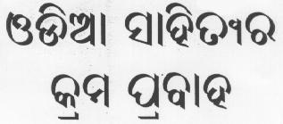
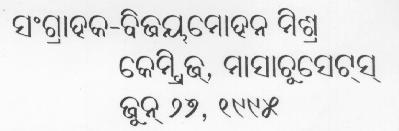

11th Century
| ||
| Name | Birthplace | Contribution |
| Balabhadra Bhanja | Ghumusara, Ganjaam | Bhaagavati (Unpublished) |
13th Century
| ||
| Name | Birthplace | Contribution |
| Naaraayanaananda Swaami | Bhubaneswar, Puri | Rudrasudhaanidhi |
15th Century
| ||
| Name | Birthplace | Contribution |
| Maarkanda Daasa | Puri |
Keshaba Koili Mahaabhashya Jnaanodaya Koili Daasagriba Badha (epic) |
| Saaralaa Daasa | Jhankada, Cuttack |
Mahaabhaarata (Daandi Brita) Bilankaa Raamaayana Chandi Puraana |
|
Achyutaananda Daasa (Panchasakhaa-1) | Tilakanaa, Cuttack |
Shunyasamhitaa Khila Haribamsa Agata Bhabishya Malikaa Gupta Bhaagabata Kaivarta Geetaa Many other books and poems |
|
Shishu Ananta Daasa (Panchasakhaa-2) | Baalipaatanaa, Puri |
Hetu Udaya Bhaagabata Artha Taareni Prasnottara Anaakaara Shabda Bhaktimuktipradaayaka Geetaa Mostly unpublished manuscripts |
|
Yashovanta Daasa (Panchasakhaa-3) | Adhanga, Cuttack |
Shiba Shirodaya Premabhaktibrahma Geetaa Aatmaparatey Geetaa Gobindachandra Many other poems |
|
Jagannaatha Daasa (Panchasakhaa-4) | Kapileswarpur, Puri |
Bhaagabata (translation) Daarubrahma Geetaa Shunya Bhaagabata Dhruba Stuti Many other poems Also Sanskrit compositions |
|
Balaraama Daasa (Panchasakhaa-5) | Puri |
Jagamohana Raamaayana Kamalalochana Chautisaa Kaanta Koili Gupta Geetaa Laxmi Puraana Many other books and poems |
16th Century
| ||
| Name | Birthplace | Contribution |
| Maadhabi Daasi | Puri |
Padma Kalpataru Also wrote in Bengali Was appointed the script writer at the Jagannaatha temple |
| Bishnu Daasa | Baanapur, Puri |
Premalochanaa Saavitri Charita Sumukhi Chautisaa Kalaavati Mandaakini Chautisaa Many other books and poems |
| Chaitanya Daasa | Khadiaala, Kalaahaandi |
Nirguna Maahaatmya Bishnugarbha Puraana Debadarshana Puraana |
| Shishu Shankara Daasa | Puri |
Ushaavilaasa (translation) Beginning of Riti Yuga in Oriya Literature |
17th Century
| ||
| Name | Birthplace | Contribution |
| Dhananjaya Bhanja (King) | Ghumusara, Ganjaam |
Ichhaabati Tripura Mohini Madanamanjari Anangarekhaa Raghunaathavilaasa Many other books and poems |
| Saalabega | Puri |
Jagannaatha Janaana Many devotional songs An extremely popular poet |
| Dinakrushna Daasa (1) [1650-1710] | Puri |
Rasakallola Jagabandhu Chhaanda Aartatraana Chautisaa Nabaghana Chautisaa Ghanashyaama Chautisaa Other books and poems |
| Dinakrushna Daasa (2) | Jaleswara, Baleswar |
Rasavinoda Kamsabibhaa Naamaratna Geetaa Jagamohana Chhaanda Dharmasaagara Many other books and poems |
| Upendra Bhanja (Kavi Samraat) | Ghumusara, Ganjaam |
Baidehisha Bilaasa Subhadraa Parinaya Laavanyavati Koti Brahmaanda Sundari Kalaakautuka Prolific Composer |
18th Century
| ||
| Name | Birthplace | Contribution |
| Banamaali | Puri |
Banamaali Padyaabali Popular Odissi Songs |
| Brajanaatha Badajena [1730-1800] | Kaaberaa, Dhenkaanaal |
Bichakshanaa Bideshaanuchintaa Shyaama Raasotsaba Samara Taranga Chatura Binoda (prose) Other books and poems |
| Bhaktacharana Daasa [1743-1828] | Saanapadara, Puri |
Mathuraamangala Manabodha Chautisaa Kalaakalebara Chautisaa Manashiksha |
| Abhimanyu Saamantasinghaara [1757-1806] | Baalia, Cuttack |
Bidagdha Chintaamani Prema Tarangini Preeti Chintaamani Rasabati Sulakshanaa Other poems and books |
| Baladeba Ratha (Kavisurya) [1778-1880] | Badakhemundi, Ganjaam |
Kishora Chandraanana Champu Ratnaakara Champu Chandrakalaa Haasya Kallola Many poems and songs |
| Jadumani Mohapatra [1780-1866] | Aathagarh, Ganjaam |
Prabandha Purnachandra Raaghaba Bilasa Jadumani Rahasya Humorous prose and poetry |
| Gopalakrushna Pattanayak (Aashukabi) [1785-1862] | Parlakhemundi, Ganjaam |
Padyaabali Excellent devotional songs on SriKrishna |
19th Century
| ||
| Name | Birthplace | Contribution |
| Fakirmohan Senapati (Vyaasakabi) [1843-1918] | Baleswar |
Utkala Bhramana Pushpamaala Chha Maana Aathaguntha (Novel) Maamu (Novel) Lachhama (Novel) Praayaschita (Novel) Many other poems, short stories and books Popular Short Story: Patent Medicine Considered as the Father of modern Oriya language |
| Madhusudan Das (Utkala Gaurava) [1848-1934] | Satyabhamapur, Cuttack |
Utkala Santaana Jananira Ukti Santaanara Ukti Jaatiya Sangita Considered as the Father of modern Oriya nation |
| Radhanatha Ray (Kabibara) [1848-1934] | Kedarapur, Baleswar |
Kedaara
Gauree Chandrabhaagaa Paarvatee Mahaayaatraa Tulasi Stabaka Many other poems and books |
| Bheema Bhoi (Santhakabi) [1850-1895] | Redhakhol, Sambalpur |
Bhajanamaala Stuti Chintaamani Madhuchakra Astaka Biharee Geetaa Padmakalpa Many other poems |
| Madhusudan Rao (Bhaktakabi) [1853-1912] | Puri |
Chhaandamaala Baala Raamaayana Kabitaabali Utkalagaathaa Varnabodha Many other poems and books |
| Ramashankar Ray [1857-1931] | Cuttack |
Kaancha Kaaveree
(Drama) Raamabanabaasa (Drama) Chaitanya Leela (Drama) Leelabatee (Drama) Bibaasinee (Novel) First Oriya Dramatist |
| Gangadhar Meher (Prakrutikabi) [1862-1924] | Barpali, Sambalpur |
Indumatee Tapaswinee Utkala Lakshmee Kabitaa Kallola Pranaya Ballari Many other poems and books |
| Chintamani Mohanty (Kabishekhara) [1867-1943] | Kulamulai, Baleswar |
Utkalakamalaa Mahendra Simharaaja Vikramaaditya Mahodadhi Many other essays and books |
| Gopala Chandra Praharaj [1872-1945] | Siddheswarpur, Cuttack |
Utkalakaahaanee (Essay) Duniyaara Haalchaal Bhaagabata Tungirey Sandhyaa Swapnarey Raajayoga (Ramyarachanaa) Purnachandra Odiya Bhaasakosha (Dictionary) Many other essays and books First Oriya Dictionary |
| Shashibhusan Ray [1874-1954] | Kedarpur, Baleswar |
Utkala Prakruti (Essay) Kanikaadarshana Utkalara Rutuchitra (Essay) Prabandha Prasoona Shiksha Many other essays and books |
| Nandakishore Bala (Pallikabi) [1874-1954] | Kusupur, Cuttack |
Naanaabaayaa Geeta Palleechitra Seeta Banabaasa Sharmisthaa Nirjharinee Many other poems and books |
| Gopabandhu Dash (Utkalamani) [1877-1928] | Suando, Puri |
Bandira Aatmakathaa Kaaraakabitaa Abakaasha Chintaa Dharmapada Nachiketaa Upaakhyaana Many other poems Started the newspaper "SAMAJA" Started the first open air school (Vana Vidyaalaya) in Sakhigopal, Puri |
| Baishnaba Pani (Ganakabi) [1882-1956] | Kothapada, Cuttack |
Meghanaada Badha (Geetinaatya) Prahalaada Charita (Geetinaatya) Rangasabhaa (Geetinaatya) Karnaarjuna (Geetinaatya) Raghu Arakshita (Suanga) Many other compositions Created folk theatre |
| Nilakantha Dash [1884-1967] | Sriramachandrapur, Puri |
Bhagavat Geetaa (Analysis) Sanskruta O Sanskruti Daasanaayaka Khaaravela Aatmajibani Many other books Reformist |
| Godabarish Misra [1886-1956] | Banapur, Puri |
Kalikaa Kishalaya Annachhatra (Novel) Mukundadeva (Drama) Ardhashataabdeera Odisha O Tahinre Mo' Sthaana (Autobiography) Many other books Established Utkal University |
| Lakshmikanta Mohapatra (Kaantakabi) [1888-1953] | Bhadrak, Baleswar |
Bandey Utkala Jananee Pilaanka Kathaa Paana Maahaatmya (Comedy) Kanaa Maamu (Comedy) Dehi Padapallavamudaram (Comedy) Many other books Foremost comic writer |
| Ashwini Kumar Ghosh [1892-1962] | Cuttack |
Saavitree (Drama) Kalaapaahaada (Drama) Utkala Gaurava (Drama) Sreemandira (Drama) Govinda Bidyaadhara (Drama) Eminent Dramatist Revived Oriya Theatre |
| Kalicharan Pattanayak (Kabichandra) [1898-1978] | Badambagarh, Cuttack |
Bhaata (Drama) Raktamaati (Drama) Saaraladas (Drama) Geetagovinda (Analysis) Chakree (Drama) Many other books Revived Odissi Music |
| Godavarish Mohapatra [1898-1978] | Banapur, Puri |
Raktapaata Bidroha Raajadrohee Mu Diney Mantree Thili Bhakti Yoga (Translation) Many other books Eminent Critic |
| Kuntala Kumari Sabat [1900-1938] | Cuttack |
Bhraanti Parasamani Kalibohoo Premachintaamani Odiyaanka Kaandanaa Many other books Foremost woman writer |
20th Century
| ||
| Name | Birthplace | Contribution |
| Kalindi Charan Panigrahi [1901-1988] | Biswanathapur, Puri |
Maatira Manisha (Novel) Amarachitaa (Novel) Muktaagadara Kshudhaa (Novel) Padmini (Drama) Jaahaa Angey Nibhaaichhi (Autobiography) Many other books Created the Sabuja Sahitya |
| Mayadhar Mansingh [1905-1973] | Parikuda, Puri |
Raajakabi (Drama) Kamalaayana (Poetry) Sindhu O Bindu (Poetry) Odiya Saahityara Itihaasa (Essay) Anveshana (Novel) Many other books Prolific Writer |
| Gopinath Mohanty [1914-1991] | Nagabali, Cuttack |
Amrutara Santaana (Novel) Maatimataala (Novel) Mahaapurusha (Drama) Kandha Parajaa Stotra O Sangeeta Utkalamani (Biography) Many other books Nationally Renowned |
Please Stay Tuned
- Nityananda Mohapatra [Novel: Naahang Tishthamee Baikunthey]
- Prativa Ray [Novel: Jajnyaseni]
Comments on the Odiya Timeline may be forwarded to...
Dr. Bijoy Misra
bmisra@husc.harvard.edu
Dr. Bijoy Misra is a physicist and astronomer and teaches at Harvard University. He has been the President of India Association of Greater Boston and helps run the Indian Cultural School, Shishu Bharati. He is President of Pragati, a non-profit group that assists literacy projects around the world. He keeps interest in Indian literature and philosophy and is the Convenor of the Outreach Comittee of the Department of Sanskrit and Indian Studies at Harvard University.
The time line "Odiya Sahityara Krama Prabaha" was prepared by him for an exhibit at the 26th OSA Convention held at Minneapolis, MN, July 1-3, 1995. He acknowledges encouragement from Dr. Prasanna K. Mishra of Rochester, MN, in preparing the timeline. The author welcomes comments on the timeline and can be reached by e-mail at bmisra@harvard.edu or voice mail at (617)864-5121.


| This Page Has Been Accessed | Times Since |
|---|
was last updated on :